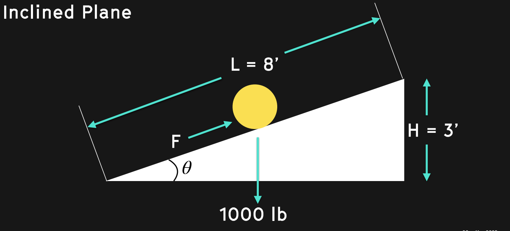
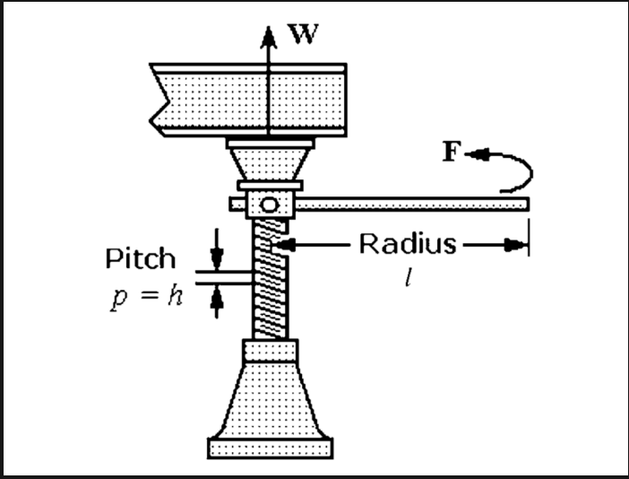
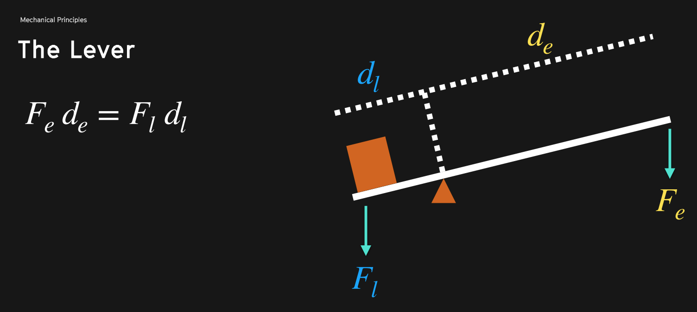
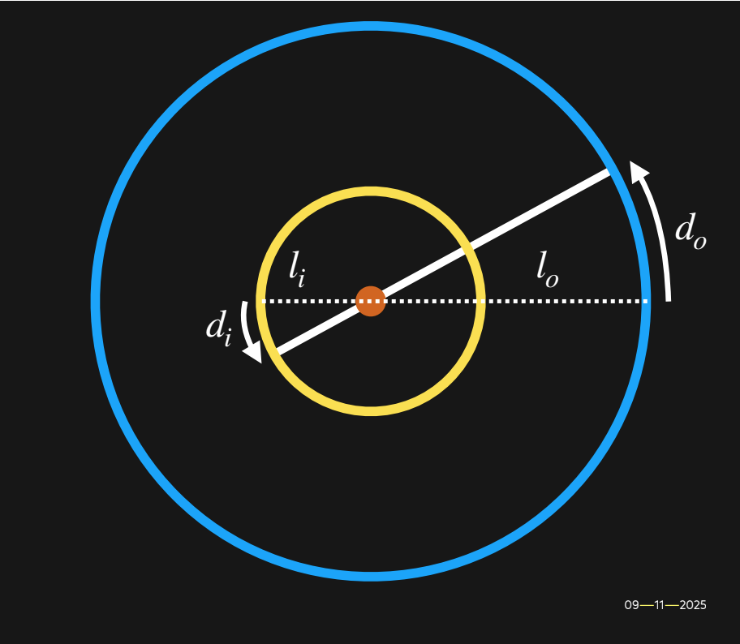
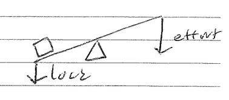
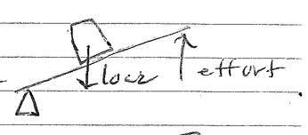
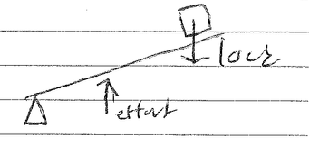

Fabricating Mechanical Automatons
Lecture 1: Mechanical Principles and Levers
Machines vs Mechanisms:
A machine modifies force, it uses energy to do work. It translates energy from one form to another.
A mechanism is a way to transmit energy in the form of motion.
Work is force times distance.
W = F × d
Force is mass times acceleration
F = ma
The unit of measure of work is one newton × one meter. In the units below Joule is capitalized because it's a name, and so is Newton.
J = N × m
If we have a 1000lb stone, and we lift it 3 feet we just did 3000 foot×pounds of work, that's the English system version. As we lift it, the stone presses against us with 1000 lbf of force because it weighs 1000lbs in the gravity of earth. This can get tricky but it's best to ignore it.
*Photo from Professor Corn's Slides
What if we take this stone and roll it up an inclined ramp? Now instead of a distance of 3 we have a distance of, say 8. The amount of force required to move the stone up will go down. We can set the equation up like this:
F is force, W is weight, or 1000lbs, and theta is the angle we are resisting gravity at.
F = W × sin(θ)
Given that sin(θ) = height(H)/length(L)
We are looking at a
sin(θ) = 3ft/8ft = 0.375
So,
F = 1000lbs × 0.375 = 375lbs
That's a lot less, and much closer to what I can imagine moving. This is the power of the inclined plane, our first source of Mechanical Advantage.
Mechanical Advantage
Mechanical Advantage of a mechanism is the ratio of the load divided by the force exerted by the operator. – Professor Corn
MA = Load / Effort
If we look at the inclined plane again, we have a load of 1000lbf and an effort of 375 lbf, so our mechanical advantage is 2.7
MA = 1000/375 = 2.7
If we imagine spinning our inclined ramp around a spiral again and again and again we just invented the screw.
Screw Type Jack
Let's use these principles to examine the Screw Type Jack, a device which amplifies human forces to lift inhuman weights.
Look close to the diagram, can you see where Force is? If we break that down now, considering the inclined plane from earlier, we can derive the following equation.
Force = Weight × height / (distance traveled at the end of the rod) or s
s = 2 × π × l
So,
s = 2 × 3.14 × 5
s = 31.4
s is really confusing, but we need to remember that a ramp is made from a height and a length, we have abstracted the length out to be the handle of the screw jack and the height to be one rotation of the screw's pitch.
As we combine what we learned,
F = w × h/s
F = 100 × 0.008/31.4
F = 25lb
Now let's look at the Mechanical Advantage we got:
MA = load / effort
or
MA = the distance of the input / the distance of the output
MA = 2 × π × l/h
MA = 31.4/0.08
MA = 393
That's really good!!!! Let's continue and apply these principles to levers.
Levers
When you imagine a lever you're probably thinking about a teeter totter or a crowbar. In truth, a lever is anything which pivots around a fulcrum.
We are dealing with two familiar forces with levers, the force of the load and the force of the effort. Most of the time, but not always, the load is on one side and the effort is on the other. Let's call them Fl and Fe
The other thing we need to figure for levers is the distance from the fulcrum. This is essential for calculating the mechanical advantage we can get out of the lever. Because energy is conserved, the lever will do the same amount of work on each side. So,
W = W
W = force × distance or F × d
So,
force × distance = force × distance
and when we correlate the distances to each side as above we can notate them as
dl and de
So we get the law of equilibrium, a way to conceptualize the balance of a lever.
Fl × dl = Fe × de
We will need this equation if we want to find the missing figure, for example how much effort force we should use to lift the load force at a certain distance. Crucially, we are measuring the distances from the fulcrum.
When we bring it back to Mechanical Advantage, we can simply consider:
MA = load / effort
or
MA = Fl/Fe
What if we spin our lever around the fulcrum. This is essentially what a gear is. A gear can help us translate different distances, the radians in a particular diameter, between two moving objects, to change the mechanical advantage and allow us to use a small effort to move a large load.
Let's keep considering this like a lever though.
If we consider Theta to be defined as it was before, as a rise and as a run, or here as a distance linearly and as a number of radians, we view it as,
θ = d0/lo
and,
θ = di/li
So,
d0/lo = di/li
Again,
MA = load / effort
MA = li/lo
It should be clear, mechanical advantage is leverage.
Types of Levers:
When we look for levers in the world, we find three types:
Class 1, the classic teeter totter
Class 2, the wheel barrow
and Class 3, "the effort in the middle" aka "the stapler" aka "the fishing rod" aka "mr mysterious"
All three of these abide by the same equations discussed above, and can be calculated as such. May the mechanical always be to your advantage and thank you to Josh Corn for the Lecture.